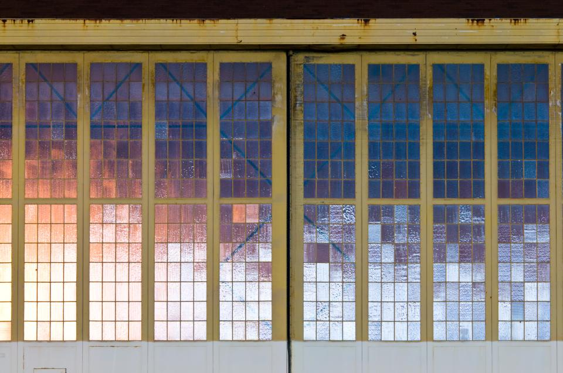
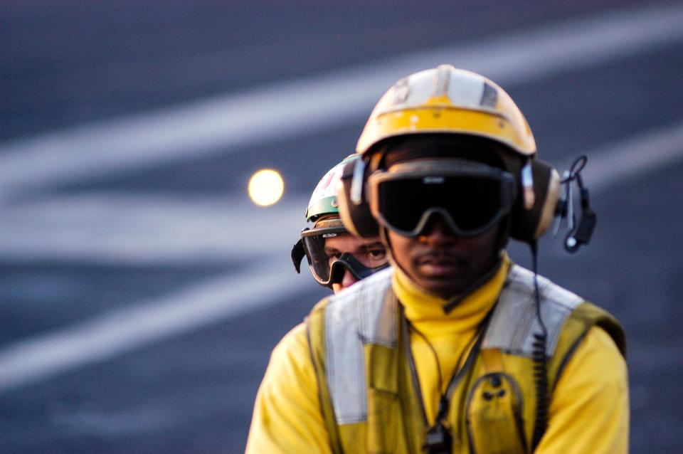

There are seven basic elements of photographic art: line, shape, form, texture, color, size, and depth. As a photographic artist, your knowledge and awareness of these different elements can be vital to the success of your composition and help convey the meaning of your photograph. Line, the most fundamental of these, is the topic of this first part of our Elements of a Photograph series.
The Merriam-Webster definition of “line” comprises 15 parts, 46 sections, and 41 subsections. With all of that, the part that we, as photographic artists, are concerned about is this: 8: A straight or curved geometric element that is generated by a moving point and that has extension only along the path of the point
Lines are either straight, curved, or a combination of the two. Lines can be solid, dashed or interrupted, implied, or psychological. They can be vertical, horizontal, or somewhere in-between. Straight lines often show up in manmade objects. Curved lines can be manmade but are often organic in nature. Solid lines are common in scenes.
Interrupted lines are easily drawn but are not as prevalent in the physical world of the photographer. The horizon is a great example of an implied line. The gaze of a subject, or the extended pointer finger of a person in a photograph, create psychological lines.
The type and general direction of lines in your image convey meaning inside the photograph. Vertical or horizontal lines convey a sense of stability or a static feel to an image. Horizontal lines can indicate distance and vertical lines can indicate height, balance, strength. Diagonal lines convey a more dynamic scene.

This is especially true with the horizon line. A level horizon or a vertical building in an image give a static sense of calm. Angle the horizon, or building, and the image implies movement or action. Curves can be comforting. Zigzagging straight lines shows energy.